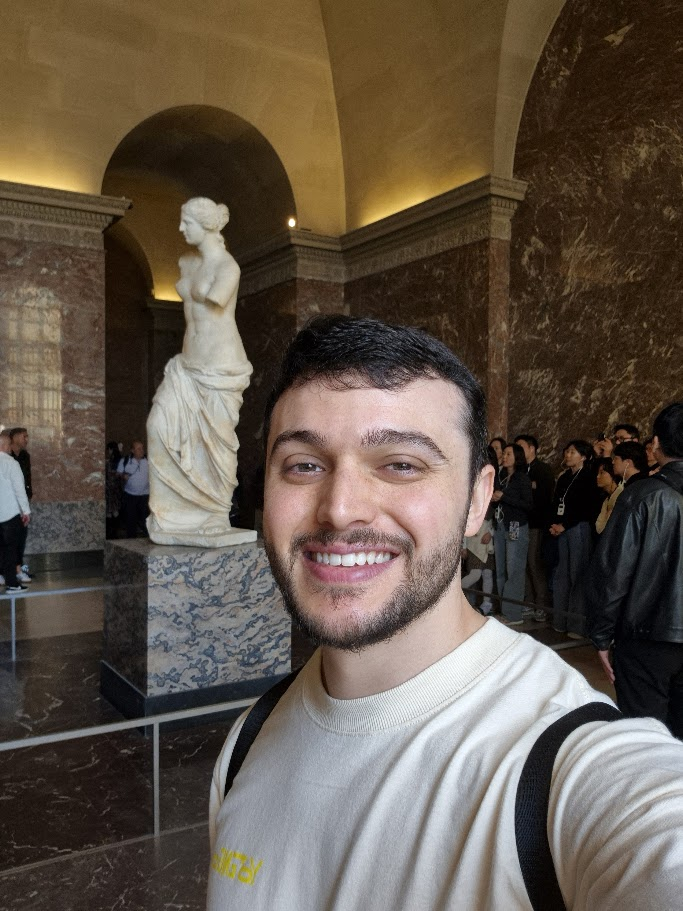

Bruno Caregnato
Desenvolvedor de Software Sênior na Fourge, atuando externamente para a Unimed Porto Alegre
Currículo (PDF)
Desenvolvedor de Software Sênior na Fourge, atuando externamente para a Unimed Porto Alegre
Currículo (PDF)